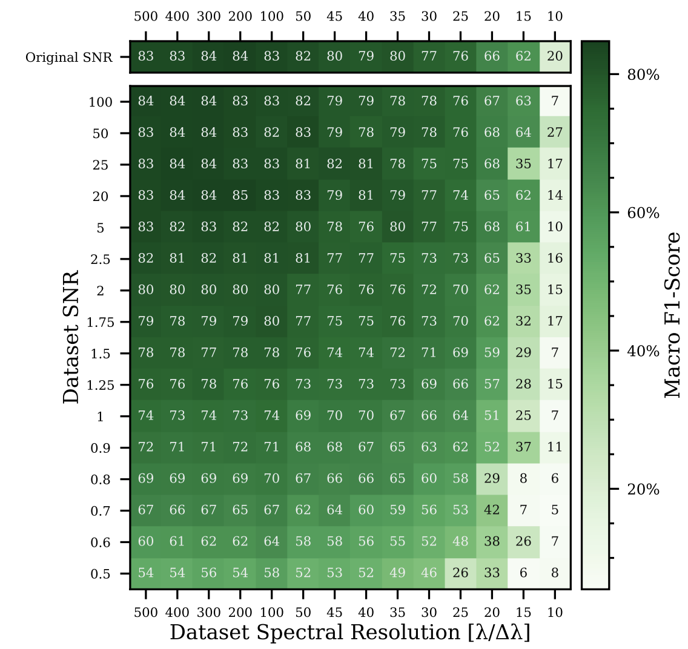

How Low Can We Go? Minimum Spectroscopic Requirements For Supernova Subtype Classification
Willow Fox Fortino, Federica B. Bianco, Maryam Modjaz, Thomas Matheson, and Umer Zubair
Millions of supernovae will be discovered with the Vera C. Rubin Observatory Legacy Survey of Space and Time (LSST). As a result, spectrographs around the world will have to make difficult decisions about which supernova candidates receive spectroscopic follow-ups. This work identifies the minimum spectral resolution, $R_λ = \fracλ{∆λ}$, as a function of signal-to-noise ratio (SNR) at which spectral classification of supernova subtypes becomes impossible. We include supernova types Ia, Ia-91T, Ia-91bg, Iax, Ib, Ic, broad-lined Ic, IIb, IIP, and Ibn in this work. We produce a definition of SNR based on specific lines for each SN subtype that allows us to generate homogeneous datasets at 16 different values of $R_λ$ and 14 different SNR's and we tested the classification performance of a recently developed deep-learning classifier, ABC-SN, on each $R_λ$ and SNR combination. We find that classification of supernova spectra into a refined taxonomy that separates, for example, between different subtypes of stripped envelope supernovae, is possible at low resolution and low SNR with no loss in model performance down to $R_λ = 50$ and $\text{SNR} = 5$. Classification performance is only minimally impacted even as low as $R_λ = 25$. We hope that astronomers using the LSST alert stream, as well as designers of future instruments and observatories, will benefit from knowing what spectral resolution is necessary to classify a supernova for arbitrary \SNR{}.